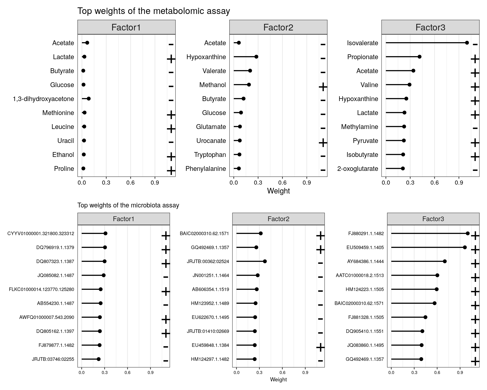

Chapter 7 Multi-Omics & Unsupervised learning
7.1 Cross-correlation
With cross-correlation analysis, we can analyze how strongly and how differently variables are associated between each other. For instance, we can analyze if higher presence of a specific taxon equals to higher levels of a biomolecule.
TASK
Run installation script to load packages into the session
Import HintikkaXO data
Subset microbiota data (rank = “Genus,” prevalence = 0.2, detection = 0.001) (subsetByPrevalentTaxa)
Apply clr-transform to microbiota data and log10-tranform to metabolites data (transformSamples)
Remove uncultured and ambiguous taxa (as it’s hard to interpret their results) ( USE THIS: mae[[1]] <- mae[[1]][-grep(“uncultured|Ambiguous_taxa,” names(mae[[1]])),] )
Calculate cross-correlation between microbiota (clr) and metabolites (log10) (Use show_warnings = FALSE, test_significance = TRUE, and mode = “matrix” as an arguments) (getExperimentCrossCorrelation)
Create a heatmap from cross-correlation matrix (pheatmap)
Example solution for the task
mae <- microbiomeDataSets::HintikkaXOData()## snapshotDate(): 2022-01-04## see ?microbiomeDataSets and browseVignettes('microbiomeDataSets') for documentation## loading from cache## see ?microbiomeDataSets and browseVignettes('microbiomeDataSets') for documentation## loading from cache## see ?microbiomeDataSets and browseVignettes('microbiomeDataSets') for documentation## loading from cache## see ?microbiomeDataSets and browseVignettes('microbiomeDataSets') for documentation## loading from cache## see ?microbiomeDataSets and browseVignettes('microbiomeDataSets') for documentation## loading from cachemae## A MultiAssayExperiment object of 3 listed
## experiments with user-defined names and respective classes.
## Containing an ExperimentList class object of length 3:
## [1] microbiota: SummarizedExperiment with 12706 rows and 40 columns
## [2] metabolites: SummarizedExperiment with 38 rows and 40 columns
## [3] biomarkers: SummarizedExperiment with 39 rows and 40 columns
## Functionality:
## experiments() - obtain the ExperimentList instance
## colData() - the primary/phenotype DataFrame
## sampleMap() - the sample coordination DataFrame
## `$`, `[`, `[[` - extract colData columns, subset, or experiment
## *Format() - convert into a long or wide DataFrame
## assays() - convert ExperimentList to a SimpleList of matrices
## exportClass() - save data to flat filesmae[[1]] <- as(mae[[1]], "TreeSummarizedExperiment")
altExp(mae[[1]], "Genus") <- subsetByPrevalentTaxa(mae[[1]], rank = "Genus", prevalence = 0.2, detection = 0.001)
altExp(mae[[1]], "Genus")## class: TreeSummarizedExperiment
## dim: 57 40
## metadata(0):
## assays(1): counts
## rownames(57): D_5__Escherichia-Shigella D_5__Ruminiclostridium 5 ...
## D_5__[Ruminococcus] gauvreauii group D_5__Defluviitaleaceae UCG-011
## rowData names(7): Phylum Class ... Species OTU
## colnames(40): C1 C2 ... C39 C40
## colData names(0):
## reducedDimNames(0):
## mainExpName: NULL
## altExpNames(0):
## rowLinks: NULL
## rowTree: NULL
## colLinks: NULL
## colTree: NULLaltExp(mae[[1]], "Genus") <- transformSamples(altExp(mae[[1]], "Genus"), method = "clr", pseudocount = 1)
mae[[2]] <- transformSamples(mae[[2]], abund_values = "nmr", method = "log10")altExp(mae[[1]], "Genus") <-altExp(mae[[1]], "Genus")[-grep("uncultured|Ambiguous_taxa",
names(altExp(mae[[1]], "Genus"))),]corr <- getExperimentCrossCorrelation(altExp(mae[[1]], "Genus"),
mae[[2]],
"clr",
"log10",
show_warnings = FALSE,
test_significance = TRUE,
mode = "matrix")## Calculating correlations...
## method: spearman, test_significance: TRUE, p_adj_method: fdr##
## Converting table into matrices...head(corr$cor,2)## Butyrate Acetate Propionate Valerate
## D_5__Escherichia-Shigella -0.06622889 -0.1390244 -0.2099437 -0.3477649
## D_5__Ruminiclostridium 5 0.67560976 0.3814259 0.4881801 -0.1973826
## Isovalerate Isobutyrate Formate Glucose
## D_5__Escherichia-Shigella -0.1908068 -0.1609585 0.07814625 -0.1677298
## D_5__Ruminiclostridium 5 -0.3050657 -0.4113141 0.35236174 0.6491557
## Glycerol Threonine Leucine Methionine
## D_5__Escherichia-Shigella -0.09118199 0.03771107 -0.1303644 -0.1570356
## D_5__Ruminiclostridium 5 -0.35028143 -0.31951220 0.3406883 0.4741088
## Valine Proline Lactate Glutamate
## D_5__Escherichia-Shigella -0.16547842 0.0021577 0.07129456 -0.1260788
## D_5__Ruminiclostridium 5 0.07054409 0.2359398 -0.06454034 0.3442777
## Ethanol Tryptophan Aspartate Alanine
## D_5__Escherichia-Shigella 0.03752345 -0.0004032258 0.10956848 -0.07017215
## D_5__Ruminiclostridium 5 0.15497186 -0.3887096774 -0.05741088 0.17036446
## Phenylalanine Isoleucine Tyrosine Glycine
## D_5__Escherichia-Shigella -0.1607880 -0.1382739 -0.1452158 0.3093809
## D_5__Ruminiclostridium 5 0.3652908 0.3810507 0.3384615 -0.2947467
## Nicotinate Uracil Urocanate Hypoxanthine
## D_5__Escherichia-Shigella -0.09438034 -0.07899428 -0.2950200 -0.07701712
## D_5__Ruminiclostridium 5 0.67088845 0.63533165 0.4642432 0.36644255
## Choline Methanol Succinate 2-oxoglutarate
## D_5__Escherichia-Shigella 0.04822442 0.04504733 0.1389371 -0.4192383
## D_5__Ruminiclostridium 5 -0.11146034 -0.01538695 -0.2616445 0.5039396
## Fumarate Pyruvate Methylamine Trimethylamine
## D_5__Escherichia-Shigella 0.06923726 -0.1629609 -0.3784418 -0.1032735
## D_5__Ruminiclostridium 5 -0.03987241 0.4943240 0.2805010 0.1143721
## Malonate 1,3-dihydroxyacetone
## D_5__Escherichia-Shigella -0.1579107 -0.1216788
## D_5__Ruminiclostridium 5 -0.1021358 0.4057836pheatmap(corr$cor)mat <- corr$cor
# Determines the scaling of colors
# Scale colors
breaks <- seq(-ceiling(max(abs(mat))), ceiling(max(abs(mat))),
length.out = ifelse( max(abs(mat))>5, 2*ceiling(max(abs(mat))), 10 ) )
colors <- colorRampPalette(c("darkblue", "blue", "white", "red", "darkred"))(length(breaks)-1)
# For plotting purpose, convert p-values, under 0.05 are marked with "X"
p_threshold <- 0.01
p_values <- ifelse(corr$p_adj<p_threshold, "X", "")
pheatmap(mat,
breaks = breaks,
color = colors,
display_numbers = p_values,
main = paste0("Correlations between bacteria and metabolites
(statistically significant associations (p < 0.05) marked with X)"),
number_color = "yellow")7.2 Unsupervised learning
Unsupervised learning is a part of machine learning where we try to find information from unknown data. It is also called data mining. Usually this means finding of clusters, for instance. Cluster refers to group of samples/features that are similar between each other. For example, based on clinical data we can try to find patient groups that have similar response to used drug.
7.2.1 Biclustering
Biclustering is a clustering method, which simultaneously clusters rows and columns. In this example, the aim is to find clusters where subset of taxa share similar pattern over subset of metabolites. In our case, we try to find clusters where taxa and metabolites correlate similarly.
Check more from OMA which has dedicated chapter on biclustering.
# Load package
library(biclust)## Loading required package: MASS## Loading required package: grid##
## Attaching package: 'grid'## The following object is masked from 'package:Biostrings':
##
## pattern## Loading required package: colorspace## Loading required package: latticeset.seed(19574)
# Find biclusters
bc <- biclust(corr$cor, method=BCPlaid(), fit.model = y ~ m,
background = TRUE, shuffle = 100, back.fit = 0, max.layers = 10,
iter.startup = 10, iter.layer = 100, verbose = FALSE)
bc##
## An object of class Biclust
##
## call:
## biclust(x = corr$cor, method = BCPlaid(), fit.model = y ~ m,
## background = TRUE, shuffle = 100, back.fit = 0, max.layers = 10,
## iter.startup = 10, iter.layer = 100, verbose = FALSE)
##
## There was one cluster found with
## 6 Rows and 7 columns# Get biclusters
bicluster_rows <- bc@RowxNumber
bicluster_columns <- bc@NumberxCol
# Convert into data.frames
bicluster_rows <- as.data.frame(bicluster_rows)
bicluster_columns <- as.data.frame(t(bicluster_columns))
# Adjust names of clusters
colnames(bicluster_rows) <- paste0("cluster_", 1:ncol(bicluster_rows))
colnames(bicluster_columns) <- paste0("cluster_", 1:ncol(bicluster_columns))
# Print biclusters for rows
head(bicluster_rows)## cluster_1
## 1 FALSE
## 2 TRUE
## 3 FALSE
## 4 FALSE
## 5 FALSE
## 6 FALSENow, we can add bicluster information into the heatmap that we already made.
# Convert boolean values into numeric
bicluster_columns[ , 1] <- as.numeric(bicluster_columns[ , 1])
bicluster_rows[ , 1] <- as.numeric(bicluster_rows[ , 1])
# Adjust their rownames
rownames(bicluster_columns) <- colnames(corr$cor)
rownames(bicluster_rows) <- rownames(corr$cor)
# Get correlation values that are over thresholds
p_threshold <- 0.01
corr_values <- ifelse(corr$p_adj<p_threshold, round(corr$cor,1), "")
# Create a heatmap
pheatmap(corr$cor,
annotation_col = bicluster_columns,
annotation_row = bicluster_rows,
display_numbers = corr_values,
main = paste0("Correlations between bacteria and metabolites
(correlation over threshold (p < ", p_threshold,") marked)"),
breaks = breaks,
color = colors,
fontsize_number = 8,
number_color = "yellow")
7.2.2 Multi-Omics Factor Analysis
We use the R MOFA2 package for the analysis, and install corresponding dependencies:
reticulate::install_miniconda(force = TRUE)## [1] "/github/home/.local/share/r-miniconda"reticulate::use_miniconda()
reticulate::py_install(packages = c("mofapy2"), pip = TRUE)The mae object could be used straight to create the MOFA model:
library(MOFA2)
# For simplicity, classify all high-fat diets as high-fat, and all the low-fat
# diets as low-fat diets
colData(mae)$Diet <- ifelse(colData(mae)$Diet == "High-fat" |
colData(mae)$Diet == "High-fat + XOS",
"High-fat", "Low-fat")
mae[[1]] <- transformCounts(mae[[1]], method = "clr", pseudocount = 1)
assay(mae[[1]], "counts") <- NULL
assay(mae[[2]], "nmr") <- NULL
model <- create_mofa_from_MultiAssayExperiment(mae,
groups = "Diet",
extract_metadata = TRUE)
model## Untrained MOFA model with the following characteristics:
## Number of views: 3
## Views names: microbiota metabolites biomarkers
## Number of features (per view): 12706 38 39
## Number of groups: 2
## Groups names: High-fat Low-fat
## Number of samples (per group): 20 20
## Model options could be defined as follows:
model_opts <- get_default_model_options(model)
model_opts$num_factors <- 15
head(model_opts)## $likelihoods
## microbiota metabolites biomarkers
## "gaussian" "gaussian" "gaussian"
##
## $num_factors
## [1] 15
##
## $spikeslab_factors
## [1] FALSE
##
## $spikeslab_weights
## [1] TRUE
##
## $ard_factors
## [1] TRUE
##
## $ard_weights
## [1] TRUEModel’s training options are defined with the following:
train_opts <- get_default_training_options(model)
head(train_opts)## $maxiter
## [1] 1000
##
## $convergence_mode
## [1] "fast"
##
## $drop_factor_threshold
## [1] -1
##
## $verbose
## [1] FALSE
##
## $startELBO
## [1] 1
##
## $freqELBO
## [1] 5Preparing and training the model:
model.prepared <- prepare_mofa(
object = model,
model_options = model_opts
)
model.trained <- run_mofa(model.prepared)Visualizing the variance explained:
library(patchwork)
wrap_plots(
plot_variance_explained(model.trained, x="view", y="factor", plot_total = T),
nrow = 2
) + plot_annotation(title = "Varience Explained per factor and assay",
theme = theme(plot.title = element_text(hjust = 0.5)))The top weights for metabolites using the three first factors:
p1 <- plot_top_weights(model.trained,
view = "metabolites",
factors = 1:3,
nfeatures = 10
) + labs(title = "Top weights of the metabolomic assay")
p2 <- plot_top_weights(model.trained,
view = "microbiota",
factors = 1:3,
nfeatures = 10
) + labs(title = "Top weights of the microbiota assay")+
theme(text = element_text(size = 8))
p1/p2
More tutorials and examples of using the package are found at: link